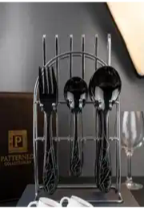
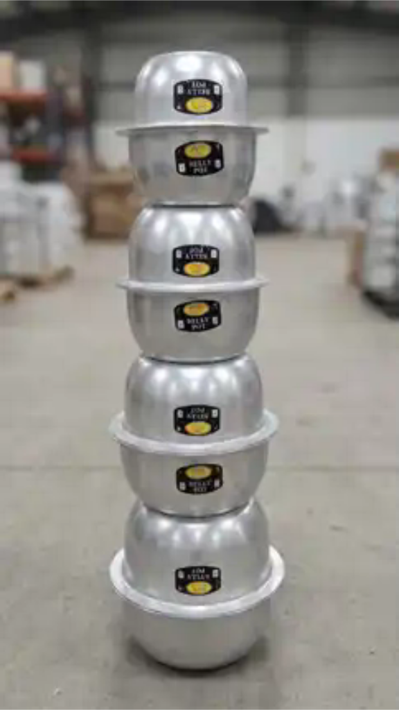
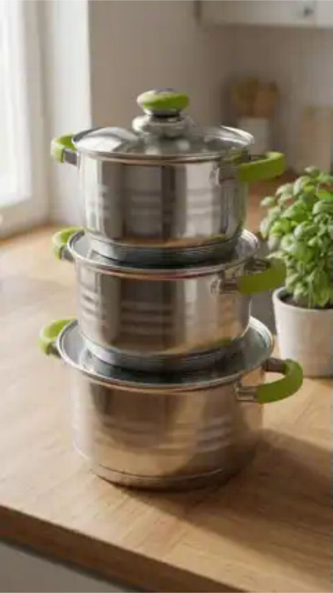
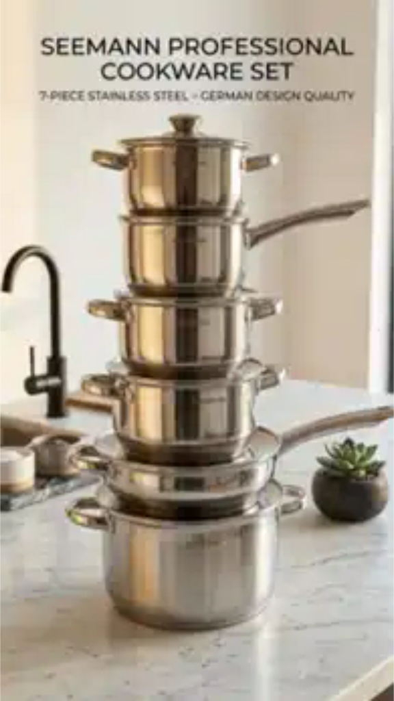

Black Marble-Style Cutlery Set with Stand
Black cutlery with marble-style handles, displayed on a silver-coloured storage stand. Ask us to confirm the included pieces and set size.
USh 85,000
Ask on WhatsApp9t Kitchenware · Kampala, Uganda
Find cookware, practical kitchen tools and appliances for everyday meal preparation. Browse selected products from 9t Kitchenware, compare prices in Ugandan shillings and open any item for ordering details.
Prices shown were checked on 28 October 2026 and may change. Confirm the current price, stock, specifications and delivery before ordering.
Browse the product photos and prices below. Ask us on WhatsApp to confirm availability and set details.

Black cutlery with marble-style handles, displayed on a silver-coloured storage stand. Ask us to confirm the included pieces and set size.
USh 85,000
Ask on WhatsApp
A selection of aluminium cooking pots in different sizes, pictured with matching lids. Ask us to confirm the pot count, capacities and set contents.
USh 120,000
Ask on WhatsApp
Three cooking pots pictured with green side handles and glass lids. Contact us to confirm sizes, materials and cooker compatibility.
USh 155,000
Ask on WhatsApp
Seemann-branded cookware pictured with lidded pots and long-handled pans. Ask us to confirm the exact pieces, capacities and cooker compatibility.
USh 200,000
Ask on WhatsAppPhotos show the products for enquiry. Confirm exact set contents, sizes, stock, delivery and payment details before ordering.

A set of 7 aluminium saucepan pots with lids included, for soups, stews, sauces and everyday meals. In stock at USh 135,000.
USh 135,000
View saucepan set & order
Refresh your kitchen with a cookware set containing five pots with glass lids and one frying pan. The non-stick coating helps food release more easily. Use suitable utensils and follow the supplied care instructions to protect the finish.
USh 185,000
View product & order
Simplify meal preparation with interchangeable blades for chopping, slicing and grating vegetables. The catch container collects ingredients as you work. Includes a hand guard and cleaning fork; handle all blades carefully.
USh 45,000
View product & order
Check food and liquid temperatures with a digital thermometer featuring a stainless steel probe and a clear LCD display. Switch between Celsius and Fahrenheit, and use the HOLD button to keep a reading on screen.
USh 25,000
View product & order
Prepare smoothies, blended drinks and cocktail mixes with this countertop blender. Variable speed controls and a pulse function give you more control over blending. Confirm the model’s ice-crushing instructions before blending ice.
USh 150,000
View product & order
Prepare rice, beans, meat and stews with selectable cooking programmes. Digital controls simplify programme selection, while the keep-warm function helps keep meals ready to serve. Follow the manufacturer’s filling and pressure-release instructions.
USh 140,000
View product & orderFor cookware, compare pot sizes, material and the number of pots and lids included. The aluminium saucepan set contains seven pots. For coated cookware, check utensil and cleaning guidance before use. When choosing an appliance, confirm its model, capacity and power requirements with us.
Our catalogue includes aluminium saucepan sets, non-stick cookware, vegetable choppers, cooking thermometers, blenders, pressure cookers and dinnerware.
The set contains seven aluminium pots with lids included. It is in stock at USh 135,000. Ask us if you need individual pot measurements.
Open a product to view its catalogue listing, or send us its name on WhatsApp. Share your location to confirm stock, delivery availability, fees and timing before paying.